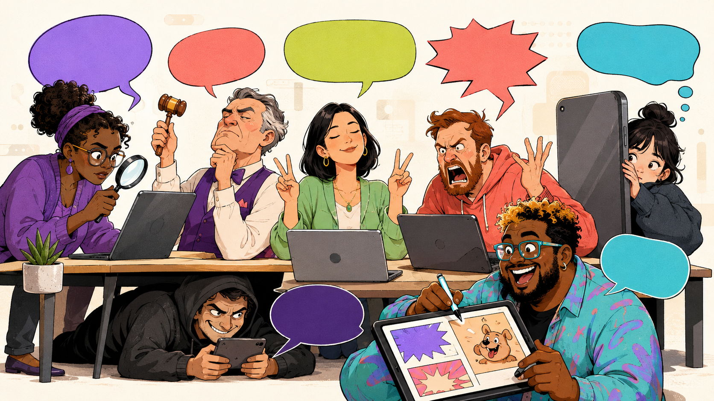

W internecie nie masz jednej osobowości.
Masz cały panel administracyjny.
Poznaj role, które przyjmujemy online — od Weryfikatora po Trolla — i sprawdź, kto najczęściej przejmuje Twoją klawiaturę.
To narzędzie edukacyjne, nie diagnoza psychologiczna. Internet i tak już ma wystarczająco wielu samozwańczych terapeutów.

Atlas zachowań
Obsada internetu
Nie są to sztywne osobowości. To role, które zmieniają się wraz z tematem, emocją, grupą i liczbą lajków.
Co mierzymy
Zachowanie, nie duszę
Jedna osoba może rano prostować fakty, po południu bronić swojej grupy, a wieczorem zostać kolekcjonerem ostatniego słowa. Kontekst robi połowę roboty, algorytm dorzuca resztę.
Twój profil
Kto dziś pisze z Twojej klawiatury?
Odpowiedz intuicyjnie. Wynik pokaże pięć dominujących ról i ich udział w Twoim aktualnym stylu zachowania online.
Podstawa badawcza
Z nauką, bez białego fartucha
Atlas łączy badane role uczestników, motywacje komentowania, efekt rozhamowania online, moralne oburzenie i zachowania trollingowe. Sam test jest narzędziem edukacyjnym, a nie walidowaną skalą kliniczną.